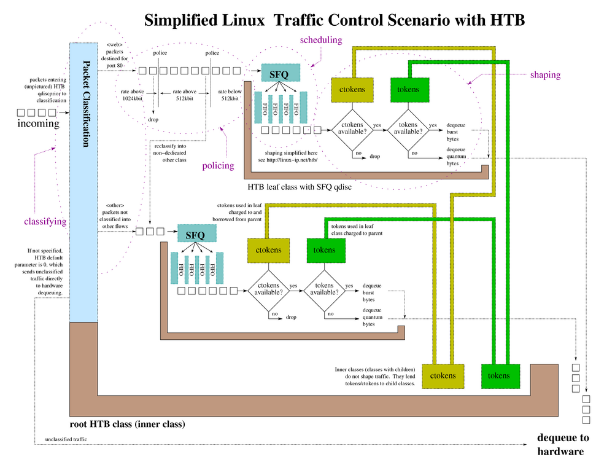

Below is a general diagram of the relationships of the components of a classful queuing discipline (HTB pictured). A larger version of the diagram is available.
Example 11. An example HTB tcng configuration
/*
*
* possible mock up of diagram shown at
* http://linux-ip.net/traffic-control/htb-class.png
*
*/
$m_web = trTCM (
cir 512 kbps, /* commited information rate */
cbs 10 kB, /* burst for CIR */
pir 1024 kbps, /* peak information rate */
pbs 10 kB /* burst for PIR */
) ;
dev eth0 {
egress {
class ( <$web> ) if tcp_dport == PORT_HTTP && __trTCM_green( $m_web );
class ( <$bulk> ) if tcp_dport == PORT_HTTP && __trTCM_yellow( $m_web );
drop if __trTCM_red( $m_web );
class ( <$bulk> ) if tcp_dport == PORT_SSH ;
htb () { /* root qdisc */
class ( rate 1544kbps, ceil 1544kbps ) { /* root class */
$web = class ( rate 512kbps, ceil 512kbps ) { sfq ; } ;
$bulk = class ( rate 512kbps, ceil 1544kbps ) { sfq ; } ;
}
}
}
}
|
